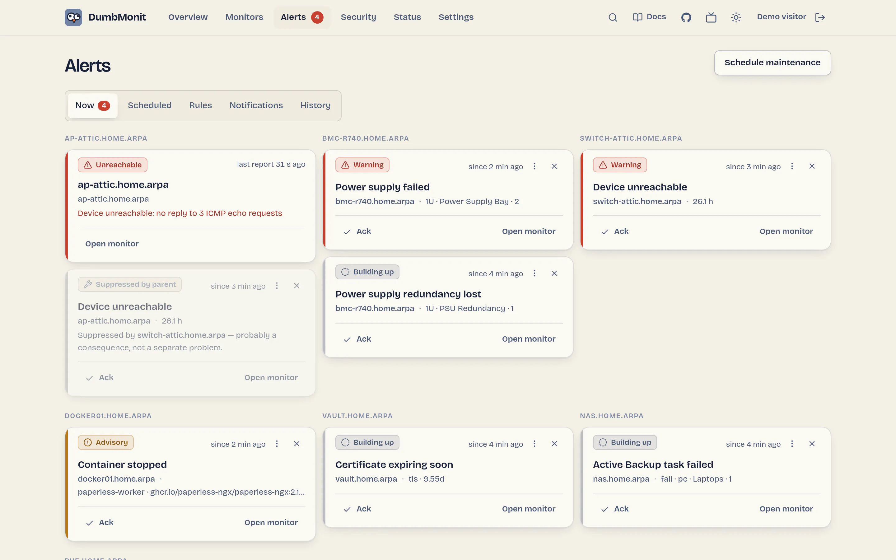
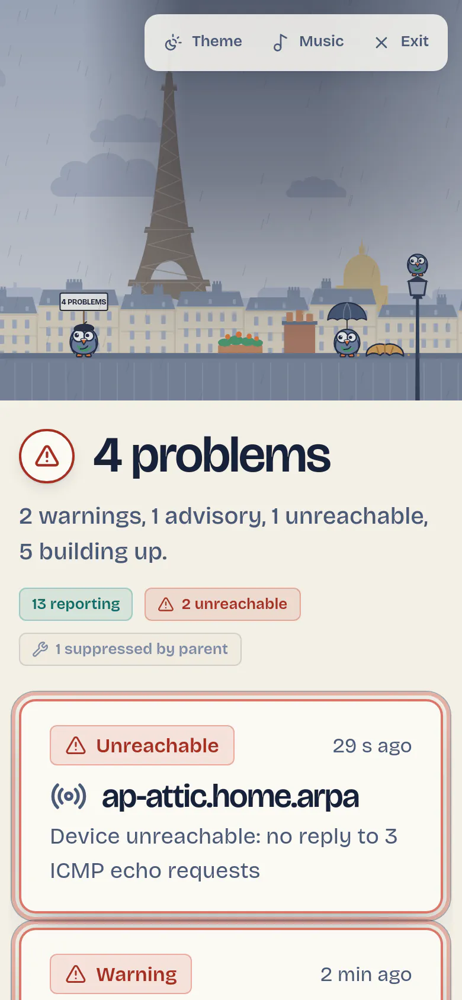

Todo lo que hace
Alertas, páginas de estado, agentes y más, en un solo contenedor. Lo que informa cada tipo de dispositivo está en las páginas de Dispositivos.
Alertas sin ruido
Las reglas útiles están activas nada más instalar. El esfuerzo se dedica a enviar menos mensajes, y mejores.
- Dependencias
Declara un switch como padre de lo que cuelga de él. Cuando cae recibes una sola notificación, no treinta; las demás aparecen como «Suprimida por el padre».
- Agrupadas por host
Un NAS cuya matriz se degrada envía un mensaje por ciclo, no uno por disco. Recordatorios, escalado, reconocimiento, posponer, ignorar por dispositivo y borrado del historial resuelto vienen incluidos.
- Líneas base que primero aprenden
Detección de anomalías sin umbral que ajustar: 168 intervalos, uno por cada hora de la semana. Permanece en silencio durante sus primeros 14 días y solo muestra lo que habría disparado.
- Previsiones
«Este sistema de archivos se llenará en cuatro días» aparece como previsión, aparte de lo que está roto ahora mismo.
- Mantenimiento y una política de notificaciones
Ventanas puntuales o semanales, histéresis, retención de flapping, horas de silencio, agrupación y un tope por hora, para que una mala noche no se convierta en doscientas notificaciones.

23 canales de notificación
Cada uno tiene un botón de prueba y una página de configuración en la documentación.
- Discord
- Slack
- Telegram
- Microsoft Teams
- Matrix
- Mattermost
- Rocket.Chat
- Google Chat
- Zulip
- ntfy
- Gotify
- Pushover
- Pushbullet
- Bark (iOS)
- Web Push (browser, PWA)
- Apprise
- Home Assistant
- Email (SMTP)
- Signal
- SMS via Twilio
- PagerDuty
- Opsgenie
- Custom webhook
Un agente para lo que no habla SNMP
Un binario pequeño que envía al servidor CPU, memoria, discos, red, servicios y tiempo de actividad, además de temperaturas, ventiladores, SMART y pools ZFS cuando la máquina los expone. Es él quien llama al servidor, nunca al revés: no hay que abrir ningún puerto en la máquina.
# la interfaz rellena el token por ti
curl -sSL http://server:8080/install.sh | sh -s -- \
--token=dmon_xxx --url=http://server:8080Para Windows se sirve un script de PowerShell en /install.ps1. El agente también existe como imagen, ghcr.io/laupernoe/dumbmonit-agent.
- LinuxCompatiblex86_64 y aarch64, systemd u OpenRC. Contenedores Docker y salud del SO (actualizaciones, reinicio pendiente, unidades fallidas).
- WindowsCompatiblex86_64, instalado como servicio de Windows. SMART mediante smartctl.
- macOSVista previalaunchd, Apple silicon e Intel; binarios adjuntos a cada versión. Aún no probado en hardware real.
- FreeBSDVista previarc.d, x86_64, pools ZFS. Aún no probado en hardware real.
- Sitios remotos, solo conexiones salientes
En modo relay, un agente ejecuta las sondas del servidor (SNMP, Proxmox, HTTP…) desde su propia red — una segunda sede, la red de un cliente o un VPS tras NAT — sin nada entrante: ni VPN ni puertos que abrir. Monitorizar un sitio remoto
Páginas de estado para quienes dependen de tus servicios
Páginas públicas en /s/<name>: grupos de servicios con 90 días de historial diario, disponibilidad a 30 y 90 días, anuncios de incidentes y mantenimiento, suscriptores por correo con doble confirmación, RSS, badges para un README, una vista compacta para incrustar en una intranet, un calendario de 90 días y gráficos de tiempo de respuesta opcionales, y una escena opcional tras el banner: unas cincuenta para elegir, desde skylines de ciudades (Venecia, París, Tokio, Nueva York…) y maravillas del mundo hasta símbolos suizos (el Cervino, el Jet d’Eau, Lucerna, Berna, Chillon). El cielo sigue el estado de tus servicios y cada escena reacciona a su manera cuando algo cae o se recupera. Las suizas llevan un reloj de estación al estilo SBB, un panel de alertas de láminas, fuegos artificiales el 1 de agosto, el caldero de la Escalade y nieve en invierno.
Solo salen del servidor las etiquetas que tú eliges. Los nombres, direcciones y tipos de los dispositivos nunca aparecen en la página, en un badge ni en un correo.
- En el móvil
Consulta el estado, reconoce una alerta, inicia una ventana de mantenimiento. Se puede instalar en la pantalla de inicio y, a propósito, sin modo sin conexión: nunca muestra el estado de ayer.
Modo pared
Solo el boletín, a pantalla completa, para un monitor en la sala: una escena viva (por defecto una azotea de París con la Torre Eiffel y las palomas de DumbMonit, u otra entre muchas) cuyo tiempo sigue tus alertas, un tema OLED para una pantalla encendida durante días y música de pared — Spotify Connect convierte la pantalla en un altavoz.

Informes por correo
Un breve correo semanal (o diario, o mensual) con la disponibilidad por grupo, los incidentes del periodo y los dispositivos menos estables, enviado sin que nadie abra DumbMonit.
Mapa de topología
Una sola imagen de toda la infraestructura, dibujada con lo que DumbMonit ya sabe: dependencias, relés, invitados de hipervisores y vecinos LLDP. Nada que teclear a mano.
Puntuación de seguridad
Cada dispositivo compatible recibe una puntuación de 0 a 100 y una nota de la A a la F a partir de las comprobaciones de buenas prácticas del propio fabricante, al estilo PingCastle: categoría, severidad, evidencia, remediación y una página de Seguridad ordenada de peor a mejor.
La puntuación es una guía, no una auditoría: solo lee lo que DumbMonit ya recopila, así que nunca sustituye una revisión de seguridad.
- Cuentas
Roles de administrador, operador (gestiona alertas, no cambia la configuración) y lector, segundo factor TOTP opcional, registro de auditoría y inicio de sesión único con OpenID Connect (Authentik, Authelia, Keycloak, Pocket ID…), con la creación de cuentas desactivada por defecto.
- Se lleva bien con lo que ya usas
/metrics,/federatey un endpoint compatible con Prometheus permiten que un Grafana existente lea los datos de DumbMonit.
API y asistentes
- API abierta y documentada
Todas las rutas tras
/api/openapi.json(OpenAPI 3.1): tokens con ámbito (dmt_…, de lectura o escritura) que pueden caducar, limitarse a una red y tienen límite de peticiones. Referencia de la API - Un asistente por MCP
27 herramientas para ChatGPT, VS Code o Cursor: leer estado, dispositivos, alertas, métricas y agentes; con un token de escritura también puede silenciar, reconocer, añadir un dispositivo o reiniciar un contenedor. Los secretos nunca salen. Conectar un asistente
Nueve idiomas
Inglés, francés, alemán, español, italiano, portugués (Portugal y Brasil), ruso y chino simplificado: la interfaz, este sitio y la documentación. Algunas traducciones aún son parciales.